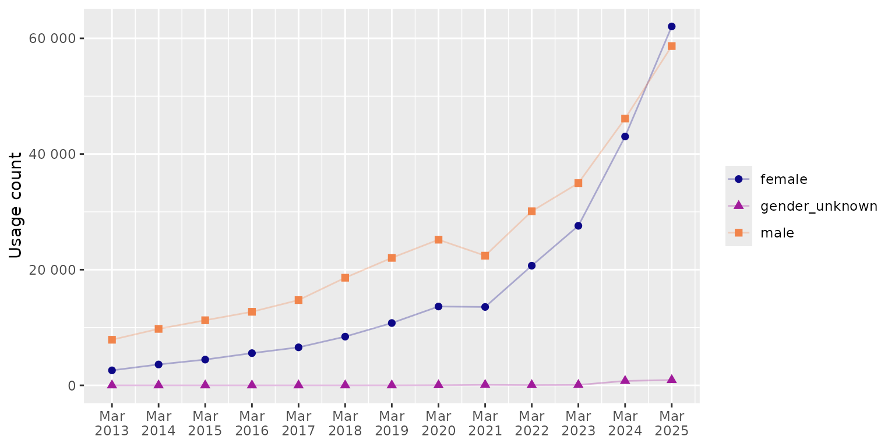
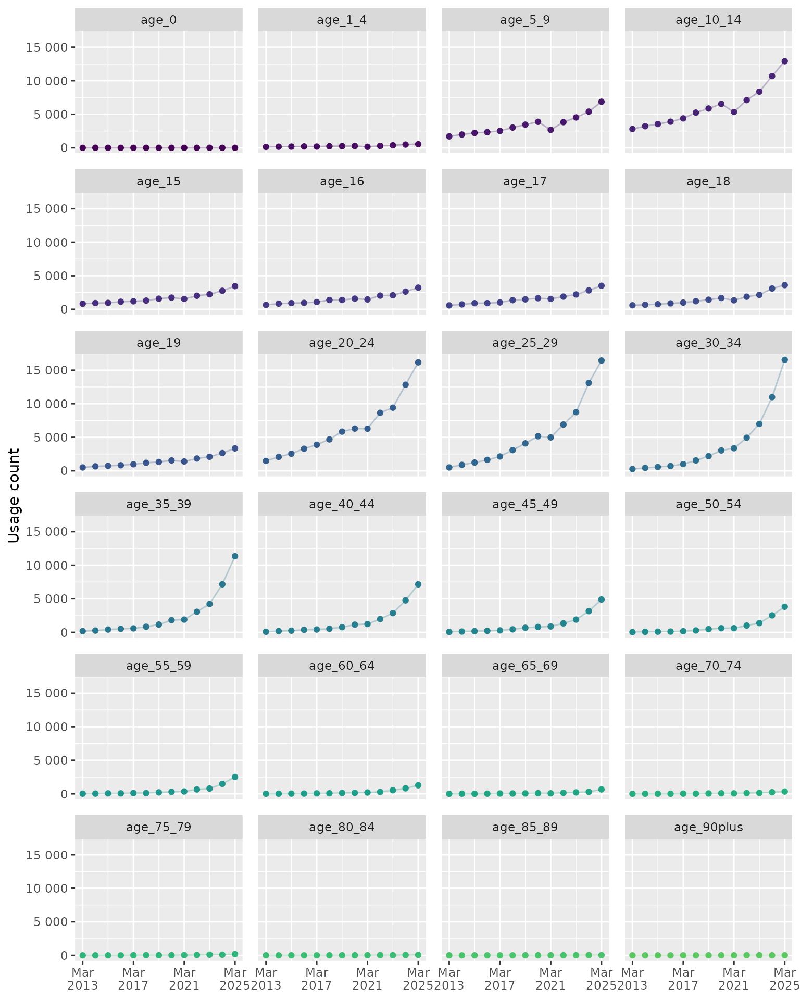

How to use ICD-10 and OPCS-4 breakdowns
Source:vignettes/how-to-use-breakdowns.Rmd
how-to-use-breakdowns.RmdOverview
Breakdowns allow you to go beyond total usage counts and explore how ICD-10 and OPCS-4 codes are used across different patient groups and clinical contexts. For more information on all datasets available in this package see the available datasets vignette.
- Position: Describe the count of main diagnosis (vs all dignoses) for inpatient treatment and the main procedures (vs all procedures) recorded for each available code;
- Sex: female, male, and gender unknown;
- Age: mostly 5-year age groups from 0 to 90 plus.
See the full list of ICD-10 breakdowns in the results below. The same
breakdowns are available for OPCS-4, but the position breakdowns are
called all_procedures and main_procedure
instead.
# Available breakdowns for ICD-10
unique(icd10_usage_breakdowns$breakdown)
#> [1] "all_diagnoses" "main_diagnosis" "male" "female"
#> [5] "gender_unknown" "age_0" "age_1_4" "age_5_9"
#> [9] "age_10_14" "age_15" "age_16" "age_17"
#> [13] "age_18" "age_19" "age_20_24" "age_25_29"
#> [17] "age_30_34" "age_35_39" "age_40_44" "age_45_49"
#> [21] "age_50_54" "age_55_59" "age_60_64" "age_65_69"
#> [25] "age_70_74" "age_75_79" "age_80_84" "age_85_89"
#> [29] "age_90plus"Worked examples
In these examples we’re exploring the code usage for the ICD-10 code F90.0 (Disturbance of activity and attention), which is used to record Attention Deficit Hyperactivity Disorder (ADHD). The underlying data structure looks like this:
icd10_adhd_breakdowns <- icd10_usage_breakdowns |>
filter(icd10_code == "F900")
icd10_adhd_breakdowns
#> # A tibble: 377 × 6
#> start_date end_date icd10_code description breakdown usage
#> <date> <date> <chr> <chr> <chr> <int>
#> 1 2024-04-01 2025-03-31 F900 Disturbance of activity an… all_diag… 121645
#> 2 2024-04-01 2025-03-31 F900 Disturbance of activity an… main_dia… 287
#> 3 2024-04-01 2025-03-31 F900 Disturbance of activity an… male 58670
#> 4 2024-04-01 2025-03-31 F900 Disturbance of activity an… female 62059
#> 5 2024-04-01 2025-03-31 F900 Disturbance of activity an… gender_u… 916
#> 6 2024-04-01 2025-03-31 F900 Disturbance of activity an… age_0 2
#> 7 2024-04-01 2025-03-31 F900 Disturbance of activity an… age_1_4 539
#> 8 2024-04-01 2025-03-31 F900 Disturbance of activity an… age_5_9 6869
#> 9 2024-04-01 2025-03-31 F900 Disturbance of activity an… age_10_14 12908
#> 10 2024-04-01 2025-03-31 F900 Disturbance of activity an… age_15 3451
#> # ℹ 367 more rowsCalculating the percentage of main diagnosis coding
Calculating what proportion of usage is recorded as a main diagnosis helps distinguish between codes used to describe the primary reason for admission and those capturing co-existing conditions.
adhd_diag_positions <- icd10_adhd_breakdowns |>
filter(breakdown %in% c("all_diagnoses", "main_diagnosis")) |>
group_by(icd10_code, description, breakdown) |>
summarise(n = sum(usage), .groups = "drop") |>
pivot_wider(names_from = breakdown, values_from = n) |>
mutate(pct_main_diagnosis = round(main_diagnosis / all_diagnoses * 100, 2))
adhd_diag_positions
#> # A tibble: 1 × 5
#> icd10_code description all_diagnoses main_diagnosis pct_main_diagnosis
#> <chr> <chr> <int> <int> <dbl>
#> 1 F900 Disturbance of act… 538927 3610 0.67Only 0.67% of F90.0 coding is recorded as the main diagnosis, indicating that ADHD is typically recorded as a co-existing condition and not the main condition being treated.
Visualising trends in sex breakdowns
# Define all x axis breaks
x_breaks <- unique(icd10_adhd_breakdowns$end_date)
# Create figure for sex breakdowns
fig_adhd_sex_breakdowns <- icd10_adhd_breakdowns |>
filter(breakdown %in% c("male", "female", "gender_unknown")) |>
ggplot(aes(x = end_date, y = usage, colour = breakdown, shape = breakdown)) +
geom_line(alpha = .3) +
geom_point(size = 2) +
scale_y_continuous(labels = label_number(accuracy = 1)) +
scale_x_date(breaks = x_breaks, labels = label_date("%b\n%Y")) +
scale_colour_viridis_d(end = .7, option = "C") +
labs(x = NULL, y = "Usage count", colour = NULL, shape = NULL)
fig_adhd_sex_breakdowns
Trends in ICD-10 code F90.0 (Disturbance of activity and attention) usage by sex in England.
Visualising trends in age breakdowns
# Define short x axis breaks (only every 4th reporting period)
x_breaks_short <- x_breaks[seq(1, length(x_breaks), by = 4)]
# Create figure for age breakdowns
fig_adhd_age_breakdowns <- icd10_adhd_breakdowns |>
filter(str_starts(breakdown, "age")) |>
mutate(breakdown = reorder(breakdown, parse_number(breakdown))) |>
ggplot(aes( x = end_date, y = usage, colour = breakdown)) +
geom_line(alpha = .3) +
geom_point() +
scale_y_continuous(labels = label_number(accuracy = 1)) +
scale_x_date(breaks = x_breaks_short, labels = label_date("%b\n%Y")) +
scale_colour_viridis_d(end = .75) +
labs(x = NULL, y = "Usage count",colour = NULL, shape = NULL) +
theme(legend.position = "none", panel.spacing = unit(.4, "cm")) +
facet_wrap(~breakdown, ncol = 4)
fig_adhd_age_breakdowns
Trends in ICD-10 code F90.0 (Disturbance of activity and attention) usage by age group in England.